The Woodpecker Inn Bed & breakfast
The Brown Family B&B, located in the Piney Mountain area of Durham, is a cozy, family-run inn offering a peaceful retreat throughout the year. Passed down through generations, it combines historic charm with modern comfort, featuring thoughtfully restored interiors and a warm, welcoming atmosphere. Guests can enjoy comfortable rooms and a relaxing stay surrounded by seasonal natural beauty and nearby historic attractions, making it an ideal getaway for rest and exploration.
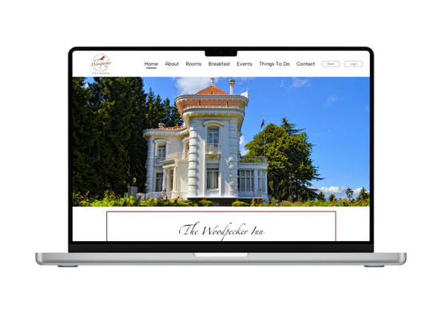
Role
- Researcher
- Designer
- Tester
Tools
- Adobe Illustrator
- Figma
- Canva
Coopyright
The photos of ingredients and flavors are from Unsplash.
Personas & Problems
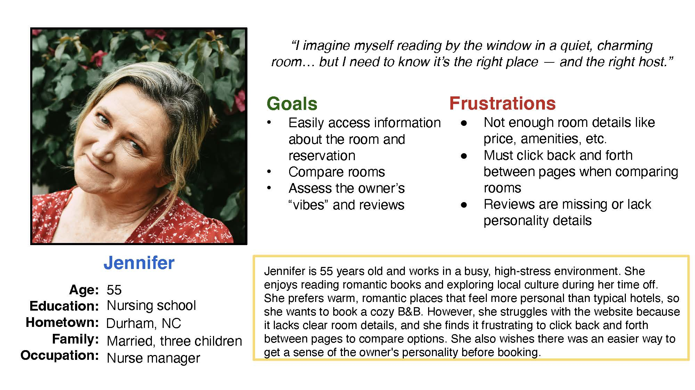
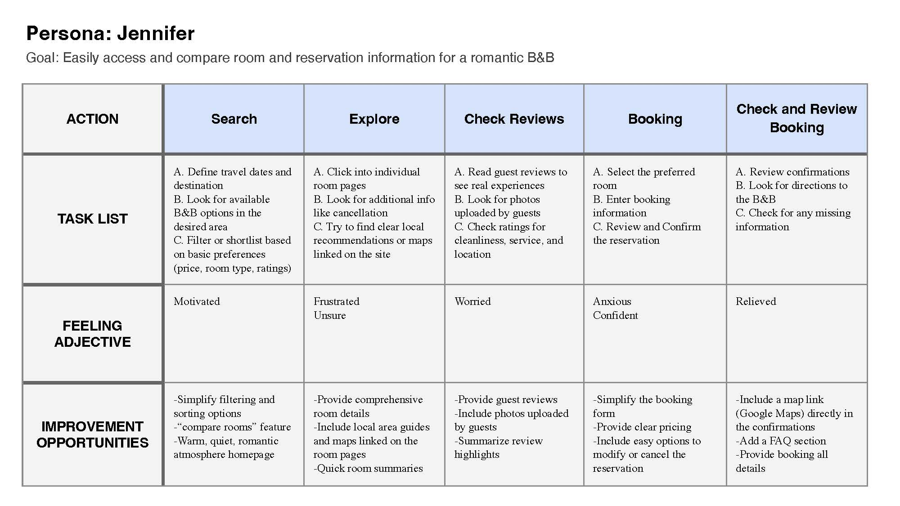
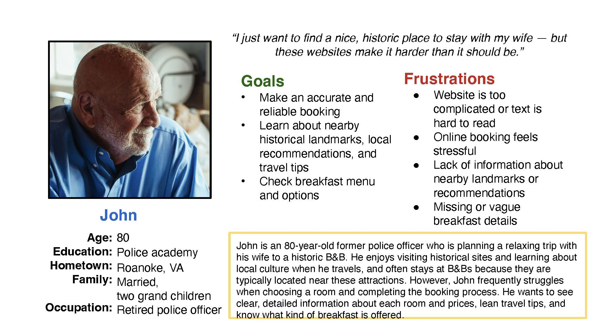
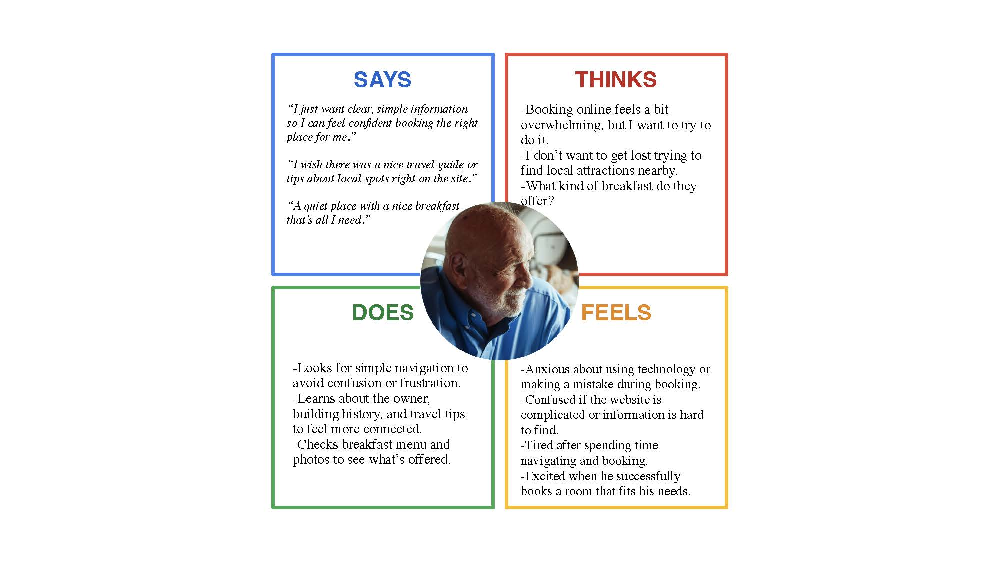
Research
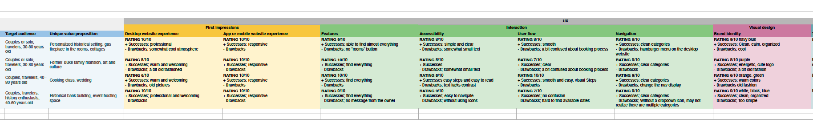
Logo, Typography & Color palette
The logo is inspired by the woodpecker, a bird commonly found in North Carolina. It reflects the idea of a home built within nature, symbolizing the B&B as a peaceful retreat located in the forest.
The typography and color palette were chosen to create a calm and welcoming atmosphere. Soft, muted tones are used to evoke warmth, comfort, and a sense of relaxation for guests.
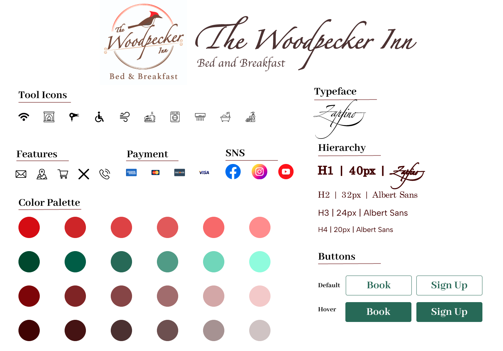
Site map
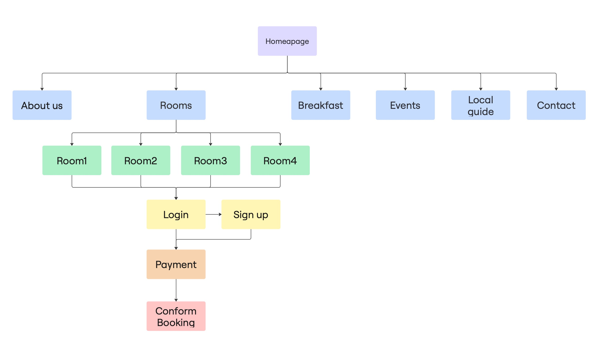
A/B Testing
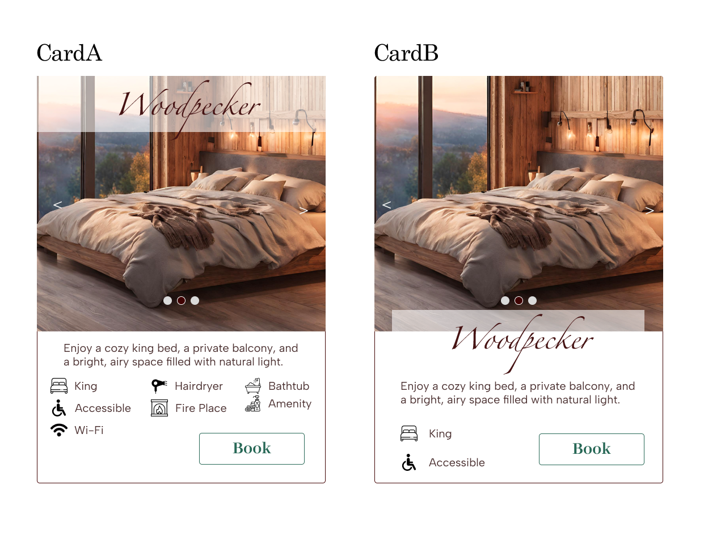
Wireframe sketches

Low-Fidelity Prototype
A low-fidelity prototype created to explore and structure a smooth booking flow, ensuring an intuitive user experience.
Mid-Fidelity
A mid-fidelity prototype focused on refining the booking process and improving user flow and interaction clarity.

High-Fidelity
After receiving feedback from peers and our professor, the design was iterated and finalized into a high-fidelity prototype.
What I changed
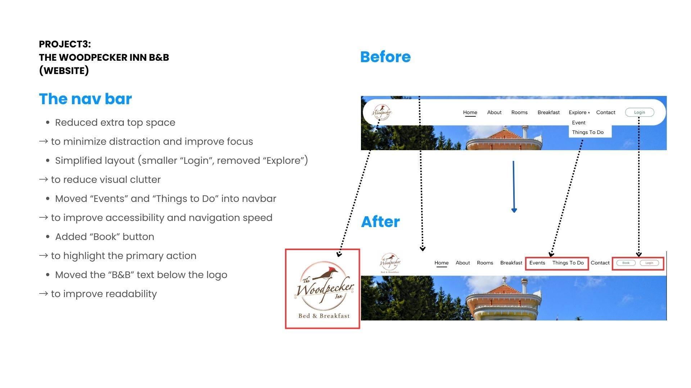
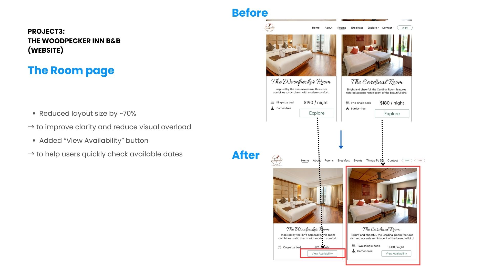
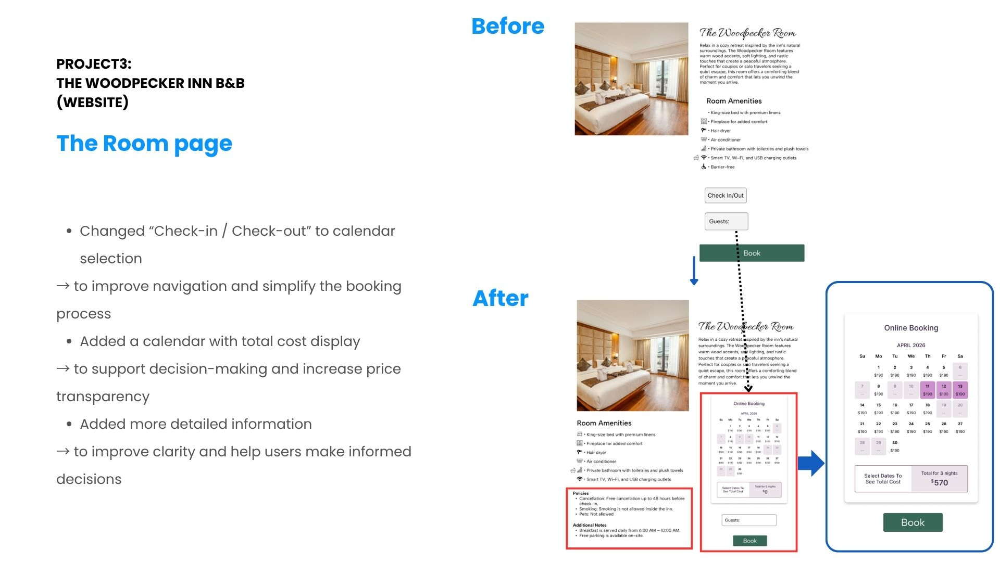
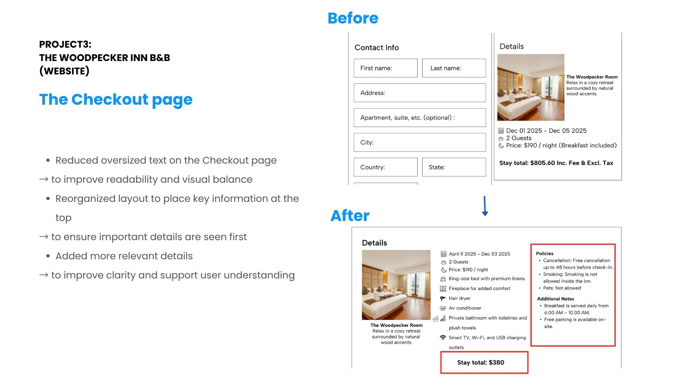
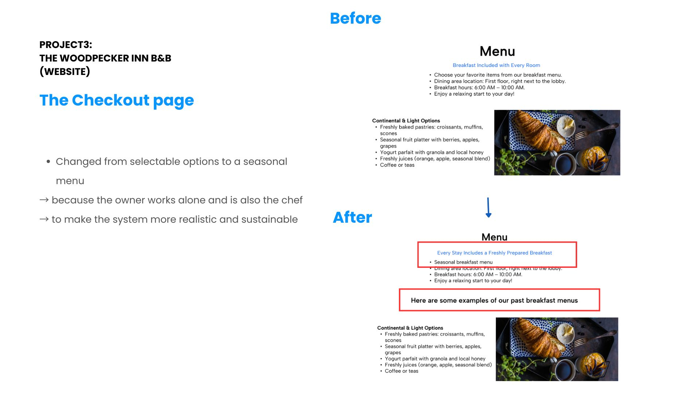
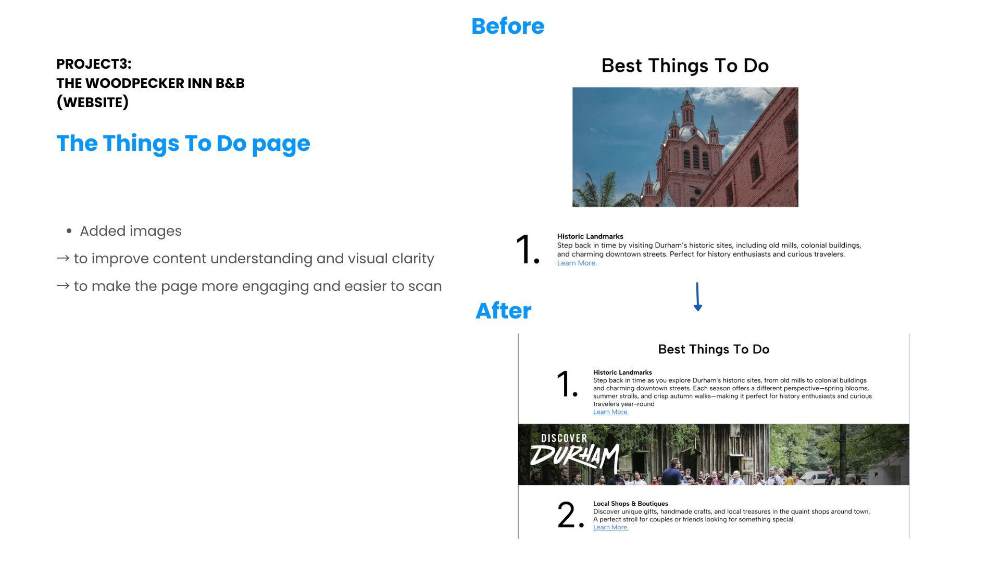
Summary & Next Steps
This B&B project was designed to provide a smooth and seamless booking experience for guests looking for a relaxing stay.
Conduct usability testing for both projects to better understand user needs and behaviors, and refine the user flow based on feedback to reduce friction and improve overall usability.